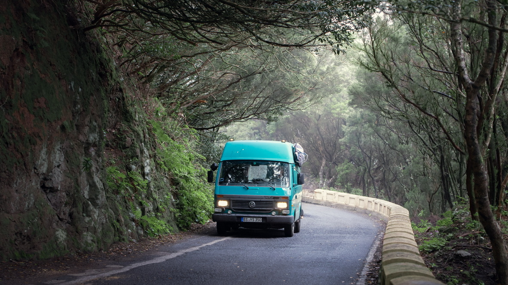
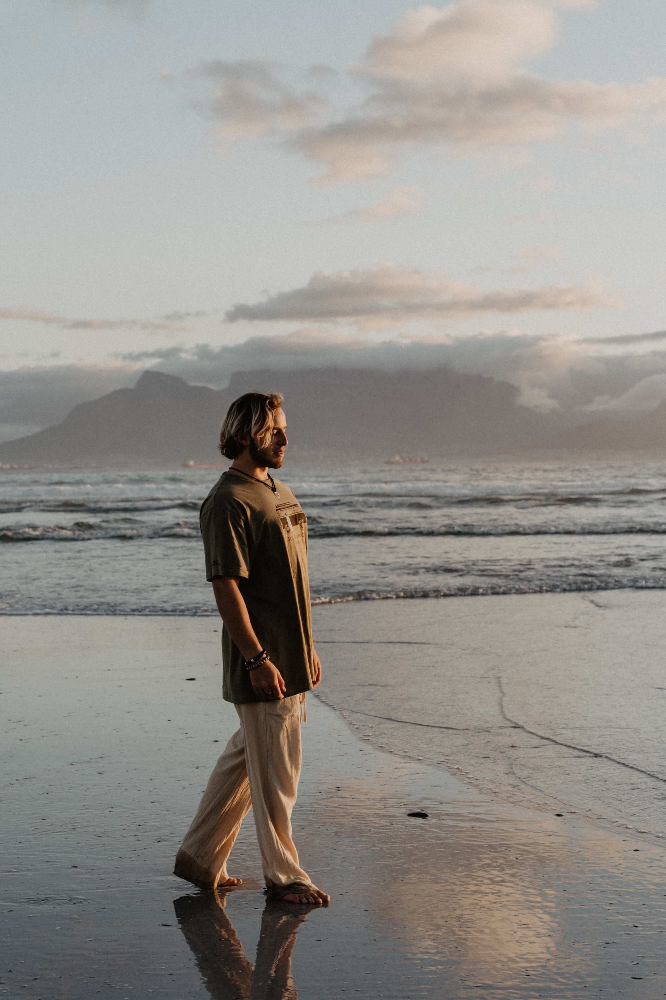
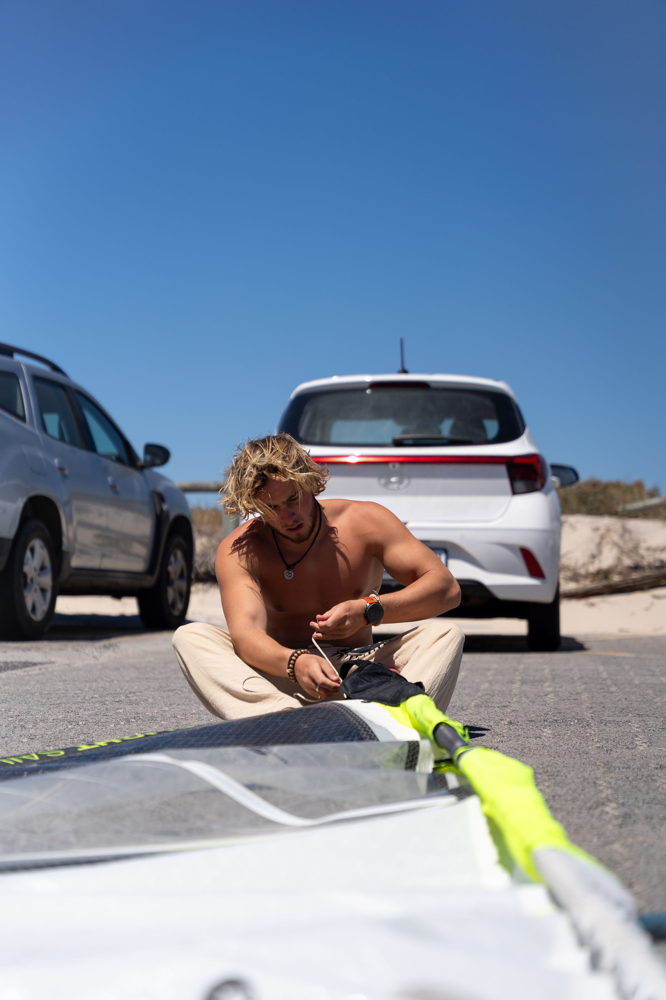


 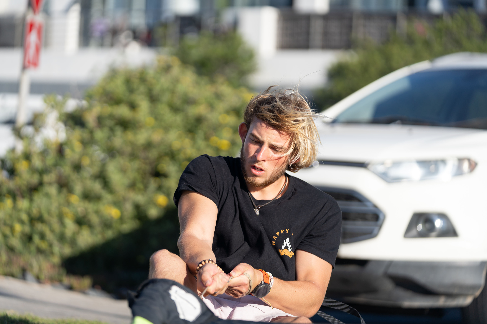
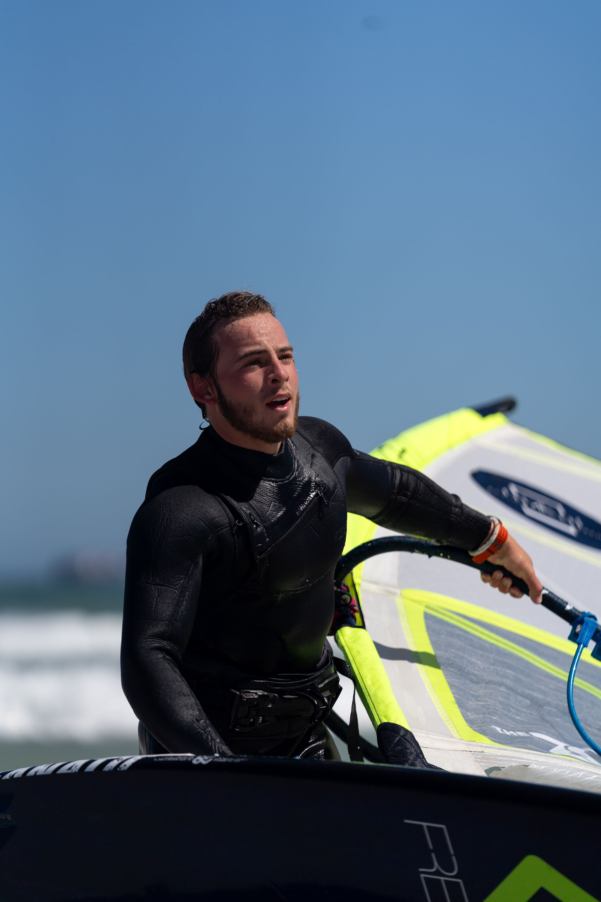
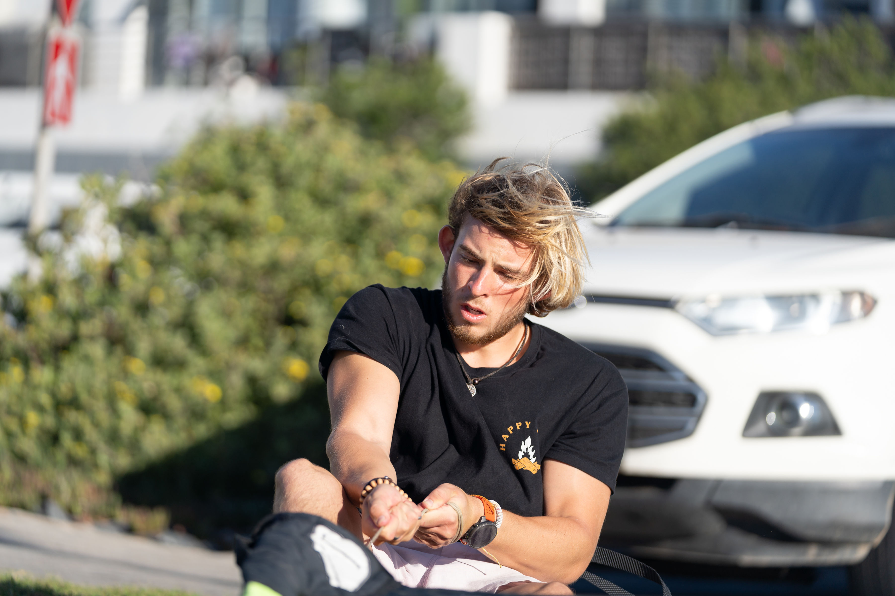
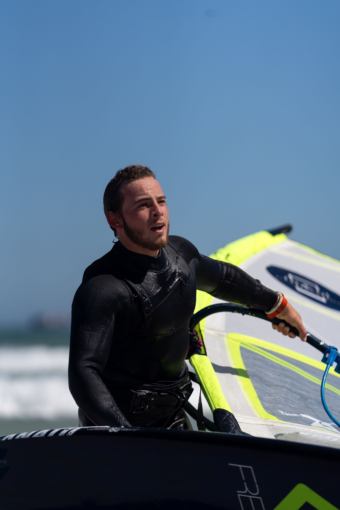
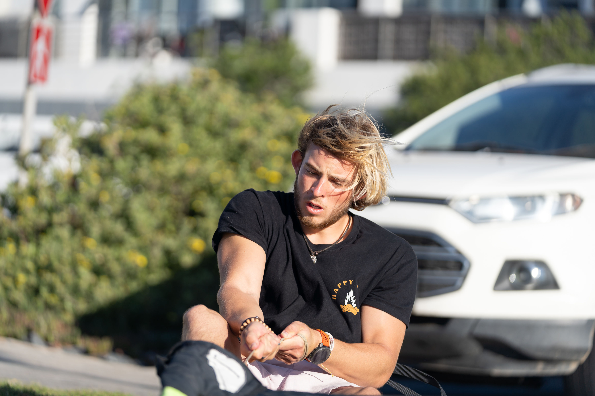
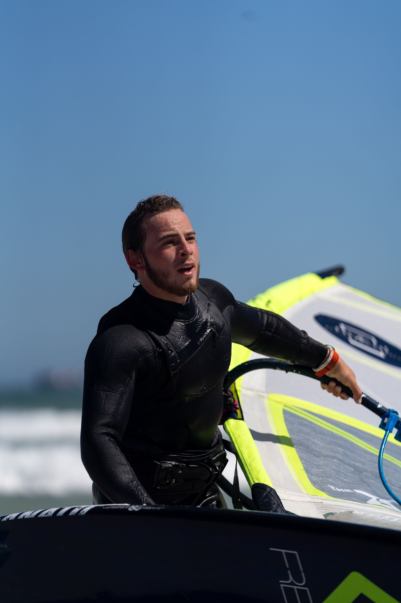
Hey, ich bin Finn
Windsurfen ist für mich mehr als nur ein Hobby, es ist das Gefühl von Freiheit, das einfach nie langweilig wird. Und genau dieses Gefühl möchte ich weitergeben. Wenn du also schon immer mal Windsurfen lernen wolltest oder nach professionellem Windsurf-Unterricht in Deutschland suchst, bist du hier genau richtig.
Ich bin dank meiner Eltern mit Windsurfen aufgewachsen. Trotzdem war es in Deutschland nicht immer leicht, genug Wind und Wellen zu finden. Also habe ich nach der Schule meinen Van gepackt und bin losgezogen: erst nach Athen, wo ich bei Tony Frey meine VDWS-Windsurf-Instructor-Lizenz gemacht habe, dann nach El Médano auf Teneriffa, um meine eigenen Skills zu verbessern.
In den letzten beiden Sommern war ich Teil des großartigen Force7-Teams auf Paros in Griechenland und dort wirst du mich auch im Sommer 2026 wieder finden.
Bis dahin bin ich in Deutschland und biete hier individuellen Windsurf-Unterricht für Einsteiger und Fortgeschrittene an.
Das Besondere: Ich komme direkt zu deinem Spot, egal ob See oder Meer. So kannst du Windsurfen lernen, wo du dich am wohlsten fühlst, ganz ohne lange Anreise.
Wenn du Lust hast, den Wind im Segel zu spüren, deine Technik zu verbessern oder einfach Spaß auf dem Wasser zu haben,
dann lass uns gemeinsam aufs Board steigen. 🌊
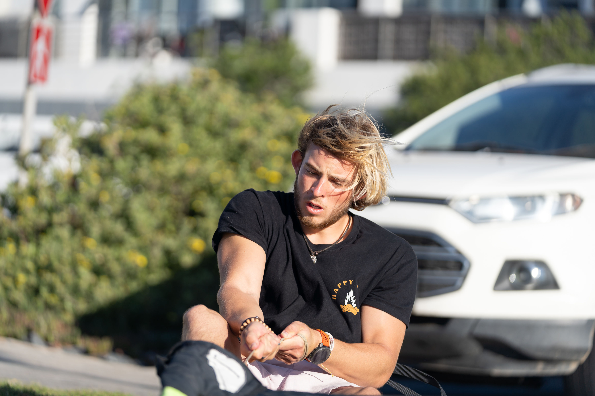
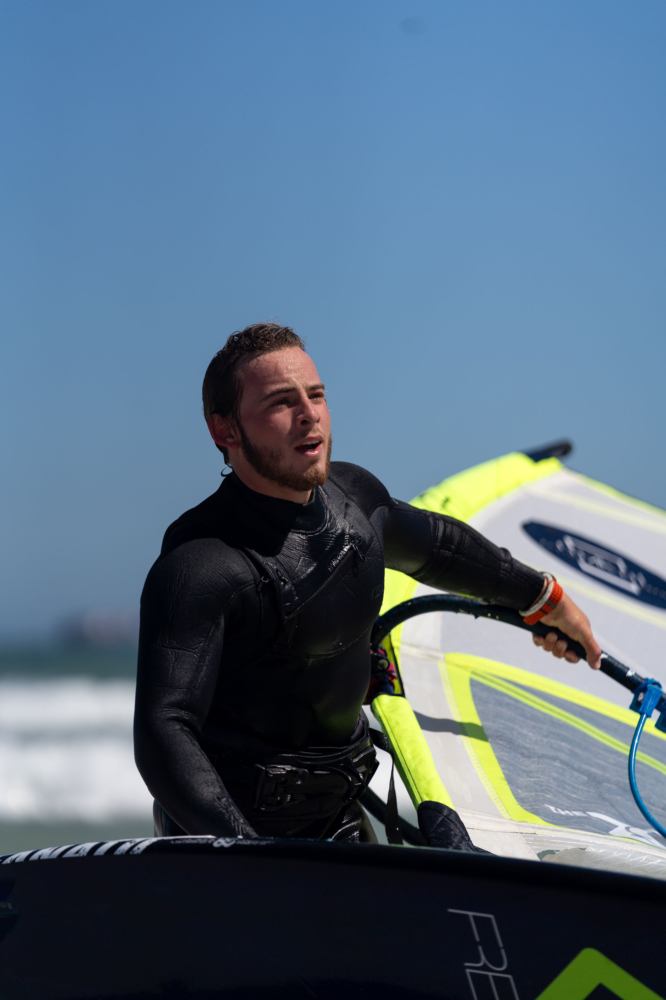